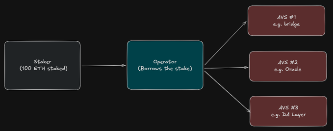
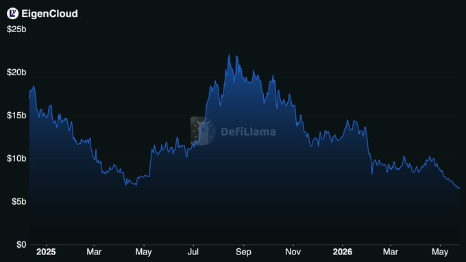
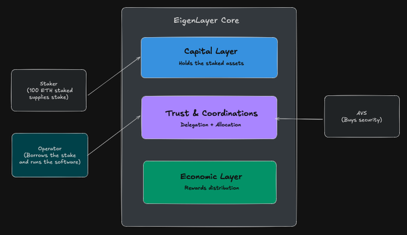
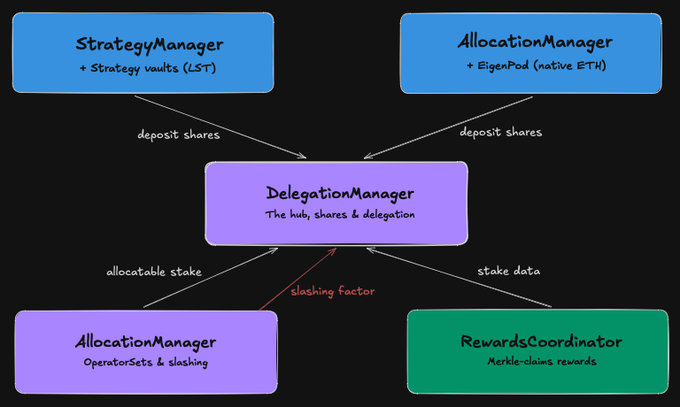
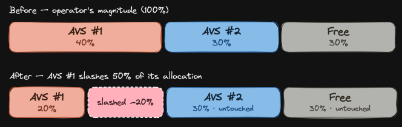
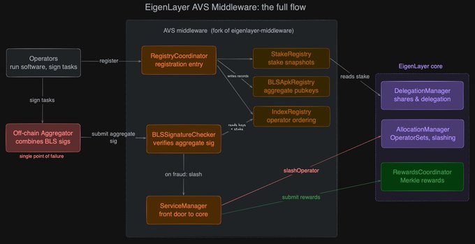
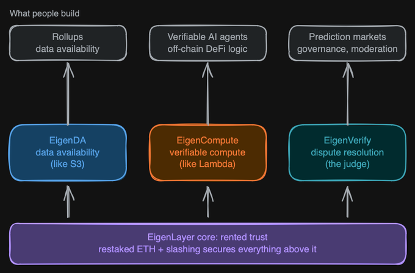

Sometimes I dive deep into different protocols during my free time. This time, it's EigenCloud or EigenLayer itself. I want to share what I captured and understood during my R&D on this protocol, and how I'm using it in my own protocol. This article is for technical builders who want to explore EigenLayer, understand its architecture, or prepare for audit competitions related to it. Think of it as an EigenCloud / EigenLayer 101.
Maybe it's a bit late to write about EigenLayer, since most of the hype was around a year ago and only a smaller group in the community is still actively curious about it.
But I still think it's worth discussing.
By the end, you should have a strong and precise big-picture understanding of the protocol.
Covering every component is outside the scope of this article, but the most important parts are included.
01The Pitch: Renting Trust
Imagine you're building a new oracle. Or a bridge, a data-availability layer, a co-processor, a fast-finality gadget, any service where users have to trust that you'll do the right thing.
You have a problem that has nothing to do with your actual product: before anyone can rely on you, you need to be expensive to corrupt.
Ethereum has this, roughly $100B of staked ETH making it ruinously expensive to attack. But Ethereum's security doesn't extend to your service. So historically you had two options: launch your own token, beg people to stake billions in it, recruit a network of node operators, and pray your security is real before someone notices it isn't, or don't bother, and ask users to just trust you. Both are terrible.
The first takes years and hundreds of millions in capital you don't have.
The second isn't trust minimized at all.
Now think about how you'd solve the equivalent problem in Web2. Twenty years ago, launching a web app meant buying servers, renting rack space, hiring people to keep them running.
Then AWS showed up and said: don't build a datacenter, rent compute by the hour.
The infrastructure problem dissolved into an API call, and a decade of software innovation followed because builders could finally focus on their product instead of their plumbing!
EigenLayer is that move, applied to trust.
Instead of bootstrapping your own security from zero, you rent it from the pool of ETH already staked on Ethereum.
Stakers who've locked up ETH agree to also put it behind your service; if you misbehave and can be proven to have done so, that stake gets slashed (burn or sth like that).
You get Ethereum grade security on day one, as a service, without minting a token or recruiting a single validator.
And just as AWS eventually grew from "rent a server" into a full platform, databases, queues, functions, the whole stack.
EigenLayer is growing into EigenCloud: not just rented security, but a verifiable cloud where the compute, the data, and the dispute resolution all come with that same cryptoeconomic guarantee baked in.
This article walks the whole stack, from the restaking primitive at the bottom to the verifiable cloud at the top, contract by contract, the way it actually fits together :)
02Restaking, Actually
So what is restaking? Strip away the jargon and it's almost embarrassingly simple: your staked ETH does a second job.
You've already locked ETH to help secure Ethereum and earn staking rewards.
Restaking says: while it's sitting there anyway, point it at my service too, and earn a bit more for taking on a bit more risk.
The same capital, doing double duty.
That's the entire trick.
Everything else is plumbing built to make that one idea safe.
There are two front doors into the protocol.
If you hold a liquid staking token, stETH, rETH, that kind of thing you deposit the ERC-20 and you're in.
If you stake ETH natively, running your own validator, you route through a little personal contract that proves to EigenLayer your validator actually exists and behaves.
Different doors, same hallway: both end up as "stake EigenLayer can account for and, if needed, slash."
(We'll name the actual contracts in the next section, for now, just hold the picture)
But here's the part people skip: you, the staker, don't run anything. Securing a service means running its software, watching a chain, signing off on data, staying online 24/7.
You're not doing that. The operator is.
Think of the operator as a bonded contractor: they run the actual node software, and they borrow your stake as the bond that makes their work trustworthy.
You delegate to them, they do the labor, your stake is what's on the hook if they cheat.
And one operator doesn't serve just one service, they take your stake and put it behind many services at once.
That last bit is where intuition usually breaks, so look at it directly:

Notice what the fan does not mean: it is one pool of 100 ETH, drawn three times, not 300 ETH of security.
The same stake stands behind all three services simultaneously.
This is why "restaking" is the right word: the stake is reused, not duplicated.
Your staked ETH isn't a shield that magically deflects attacks,
it's a bond, a hostage.
It does nothing to prevent an operator from misbehaving.
What it does is guarantee that if they're caught, they lose it.
The security is the threat of that loss, not the ETH itself.
So when you see a headline like "EigenCloud secures ~$20B"
be suspicious of the framing.

That number is the total stake in the system, but as the diagram showed, the same stake is shared across many services.
The honest question is never "how much stake exists?" It's "how much slashable stake is allocated to this specific service, and is that more than what an attacker stands to gain by breaking it?"
A service backed by ~$20B of shared stake (at the peak) might have only a sliver actually allocated to it, and if that sliver is worth less than the prize, it isn't secure, no matter how big the headline number is.
Even DefiLlama hedges this number: by default they don't fully count restaked ETH, to avoid double-counting it against the staking protocols it came from.
03The Core Contracts: Three Jobs, One Hub
Everything in the last section, staking, delegating, slashing
has to live somewhere onchain.
And when you actually open the EigenLayer repo, the thing that surprises people is how few contracts matter.
The marketing makes it sound sprawling. The code does not.
There are really just three jobs to do, and the contracts group cleanly around them.
Job one: hold the money.
Someone has to custody the actual staked assets and keep an honest ledger of who owns what.
Job two: coordinate trust.
track who's delegated to whom, which operator is on the hook for which service, and how much of their stake is slashable.
Job three: pay people.
distribute rewards to the stakers and operators doing the work. Capital, trust, economics.
That's the whole protocol in three words.
Here's how those three jobs map onto the system, with the actors plugged in:

The shape worth noticing: the staker plugs into capital, the operator into trust, the AVS into trust, but none of them reaches directly into anyone else's layer.
Everything routes through the middle.
That middle layer isn't just a part of the system, it's the part every other part has to talk to.
Now let's name names.
The capital layer has two halves because, remember, there are two front doors.
Liquid staking tokens flow through StrategyManager, which parks each kind of token in its own Strategy contract, a thin vault that just holds the ERC-20 and counts shares.
Native ETH flows through EigenPodManager, which spins up an EigenPod for each staker, a personal contract that proves to EigenLayer that your validator on the beacon chain is real and behaving.
Two paths, but both produce the same output: shares, an accounting unit the rest of the system understands.
The trust layer is where it gets interesting, and it's two contracts. DelegationManager is the hub, the one contract that touches all three layers. It records that you delegated to an operator, it tracks the shares backing that operator, and it holds the slashing accounting. AllocationManager (newer, added in the ELIP-002 upgrade) is where an operator says "I'm putting this much of my stake behind that specific service," and it's where slashing actually fires.
The split matters: delegation and allocation are different acts, and keeping them in separate contracts is what lets one operator serve many services with different amounts on the line for each.
The economics layer is a single contract, RewardsCoordinator, and it's refreshingly boring: AVSs deposit rewards, it builds a Merkle tree of who's owed what, and stakers and operators claim their slice.
No streaming, no per-block accrual, just periodic batches and claims.
Wire those five together and you get the actual machine:

Trace the labels once and the design clicks.
Both capital paths push deposit shares up into DelegationManager that single accounting unit is the only thing the hub cares about, regardless of which front door the stake came through.
From there the hub forks exactly along the layer boundary: it hands allocatable stake left to AllocationManager (where the operator commits it to specific services) and exposes stake data right to RewardsCoordinator (which uses it to figure out who's owed what).
And that red arrow, slashing factor, pointing back up into the hub, is the whole game.
When a service slashes a misbehaving operator, the result doesn't get applied service by service or staker by staker.
AllocationManager writes a single number back into DelegationManager, and every withdrawal afterward silently reads through it.
That's how slashing stays cheap no matter how many people delegated.
Which is the perfect place to stop, because how that one number deletes the right amount of value, not too much, not too little, across multiple services at once, is its own beautiful piece of math.
That's the next section.
04From Stake to Slash: The Math That Makes It Cheap
Here's a problem that sounds trivial and isn't. An operator misbehaves.
They had fifty thousand stakers delegated to them.
You need to reduce every one of those stakers' balances by, say, 13%.
The obvious way, loop over fifty thousand accounts and subtract, is a non starter.
It would cost millions in gas, might not fit in a block at all, and the cost would scale with popularity, so the most used operators would be the most expensive to punish.
Slashing has to be O(1): the same cost whether one person delegated or a million did.
EigenLayer's answer is the oldest trick in the vault accounting book, the one ERC-4626 uses for share prices.
Keep one number per operator that represents "how much a share is currently worth," and let every balance be computed through that number on read.
Slash once, by lowering the number, and all fifty thousand balances drop in proportion automatically, without a single per staker write.
That number is built out of magnitudes.
Think of an operator's stake in a given asset as a single bar, their total slashable capacity, which starts at 100%.
The operator carves that bar into allocations: this slice backs AVS #1, that slice backs AVS #2, the rest is free. When an AVS slashes, it can only eat into its own slice, and only by the fraction it asks for (wadsToSlash).
Here's the picture:

Now the math. Everything below uses WAD = 1e18, which is just how Solidity writes the number 1.0 when it has no decimals.
so "p / WAD" means "p as a fraction between 0 and 1."
Start with the identity that makes slashing free.
A staker's actual withdrawable balance is never stored directly, it's computed on read from three numbers:
their raw deposit, a personal correction factor, and the operator's current exchange rate:
The slashingFactor is the per operator number, and for liquid staked assets it's just the operator's maxMagnitude, the height of that bar.
(Native ETH carries one extra multiplier, a beaconChainSlashingFactor, for validators slashed on the beacon chain)
Now watch a slash happen.
The AVS calls slashOperator with a fraction p, and the magnitude it had allocated, m, loses that fraction
which comes straight out of the operator's total, M:
That's the only state the slash writes. The new exchange rate is simply the new total magnitude:
And because every staker's balance is computed through that one factor, lowering it scales all of them by the same ratio in a single stroke — this is the O(1) payoff:
Finally, the bound that the diagram was really about. The most any delegator can lose to a single AVS is capped by how much the operator allocated to it — slash everything (p = WAD) and you still only reach that one slice:
Two pieces of bookkeeping make this honest.
The first is depositScalingFactor, that per staker correction in the first equation.
It exists because stakers deposit at different times, some before a slash, some after.
The operator's exchange rate has already fallen for latecomers, so without a correction their fresh deposit would instantly appear "pre-slashed" depositScalingFactor is set on each deposit to cancel that out, so everyone's balance reads correctly off the same shared rate.
It's the per account cost basis to the operator's share price.
The second is the deallocation queue.
If an operator could allocate stake, misbehave, and then yank the stake out before being slashed, the whole bond is theater.
So deallocating magnitude isn't instant, it sits in a queue for a delay that mirrors the staker withdrawal delay, staying slashable the whole time.
You can stop backing a service, but you can't outrun a slash for something you already did.
That's the engine.
Capital becomes shares, shares become magnitude, magnitude is what gets deleted, all without ever looping over a staker!
05Middleware and AVS Design: Where the Trust Actually Lives
Everything so far has been EigenLayer core: the contracts Anthropic, sorry, the contracts EigenLayer ships and maintains. But notice something missing.
Nothing in core knows what your AVS does.
Core doesn't know your service is an oracle, doesn't know what counts as misbehavior, doesn't know when to call slashOperator.
Core is a bank.
It holds the bond and executes the slash when told to.
It has no opinion on whether you did your job.
So who decides? Your middleware.
This is the code the AVS team writes and deploys, sitting between the off-chain work your operators actually do and the core contracts that hold their stake.
It is the loan officer between the bank and the business: it knows the borrower, judges performance, and is the one who walks into the bank and says "slash this operator"
Most teams do not write this from scratch.
They fork eigenlayer-middleware, a reference implementation, and the same handful of contracts show up almost everywhere:

Read it as a journey an operator takes.
They register through RegistryCoordinator, the front desk that writes them into three record keepers: StakeRegistry (how much stake backs them, snapshotted over time), BLSApkRegistry (their BLS public key, so signatures can be aggregated and checked), and IndexRegistry (their position in the operator ordering, which lets the system refer to operators by cheap bitmaps instead of addresses).
Then they go to work. When the service needs a decision signed off, operators sign it, an off-chain aggregator combines those signatures into one, and that aggregate hits BLSSignatureChecker, which verifies it against the keys and stake in the registries.
ServiceManager is the contract that talks back to core: it registers the OperatorSet, it submits rewards, and it is the hand that pulls the slashing lever.
Three things are worth flagging for anyone evaluating an AVS, because they are where the risk actually concentrates.
First, that off-chain aggregator is the quiet centralization point of the entire design.
Look at the diagram: every operator signature funnels through one box before anything reaches the chain.
If that aggregator is a single server run by the AVS team, then no matter how decentralized the operator set looks on paper, liveness depends on one machine, and censorship is one config change away.
Most "decentralized" AVSs have a centralized throat to choke right here, and almost no marketing page mentions it!
Second, middleware is upgradeable by the AVS team.
Core is relatively battle tested and changes slowly through public governance.
Your AVS's middleware is a fresh contract that the team can usually upgrade at will.
The bond is held by audited code; the rules for losing it are held by code that may have shipped last week.
When you assess "is this AVS safe" you are really assessing the AVS's middleware and its upgrade keys, not EigenLayer.
Third, not everything should be an AVS.
The whole model only works if misbehavior is objectively provable on-chain. A bad signature, a quorum disagreement, a fraudulent state claim, a failed ZK proof: those can trigger a slash, because a contract can verify them.
"The operator gave a low quality answer" or "was a bit slow" cannot.
If your service's failures are subjective or unattributable, restaking gives you a bond you can never actually collect, which is just expensive theater.
Step back and the full shape is visible: core holds the money and runs the math, middleware encodes what your service means and when to punish, and the off-chain layer does the real work.
The trust flows down through all three, and it is only as strong as the weakest, which is almost never core.
06EigenCloud on Top: What You Actually Build
Everything until now was the substrate: rent trust, allocate stake, slash provable misbehavior.
Useful, but raw. It is the equivalent of AWS in the year it only rented you bare servers.
The reason AWS took over the world was not the servers, it was everything that came after: S3 for storage, Lambda for functions, a catalog of services you could snap together without thinking about the metal underneath. EigenCloud is that same growth applied to trust.
It takes the restaking primitive and wraps it in developer products, so you can build a verifiable application without ever touching a magnitude or writing a ServiceManager.
There are three of them, and the cleanest way to hold them in your head is as the verifiable mirror of the cloud stack you already know:

Read the stack bottom to top and the whole article snaps into one picture. The purple bar is everything from sections 2 through 5: the same rented trust, the same slashing.
The three boxes above it are not new security models, they are just specialized ways to spend that trust.
And the top row is what people actually ship!
EigenDA is storage, the S3 of the stack.
Blockchains are terrible places to keep data: every node stores everything forever, so space is absurdly expensive.
EigenDA is a high throughput layer whose operators promise the data is available, and lose stake if it is not.
The flagship use case is rollups.
A rollup processes thousands of transactions off chain but still has to publish the underlying data somewhere cheap and provably available, or users cannot reconstruct their own balances.
EigenDA is that somewhere, at a fraction of the cost of posting to Ethereum directly.
EigenCompute is execution, the Lambda of the stack.
This is the one that breaks the old ceiling.
On Ethereum you could only run tiny, deterministic smart contracts; anything heavy, an ML model, a data pipeline, real game logic, was off-limits. EigenCompute lets you ship ordinary code in a Docker container, have a set of operators run it, and have stakers guarantee it ran honestly.
Suddenly "off chain but still trustworthy" is a thing you can buy.
The use cases here are the loudest part of the EigenCloud pitch: verifiable AI agents that can hold funds and act on their own, off chain DeFi logic too complex for a contract, anything where users need to trust a result without re-running it themselves.
EigenAI rides directly on top of this, an LLM inference service with an OpenAI style API, so you can call a model and get a result that comes with a cryptoeconomic guarantee it was not tampered with.
EigenVerify is the judge, the piece that has no clean Web2 analog.
It is the dispute resolution layer, and its trick is that it handles two kinds of truth.
Objective claims get settled by re-execution or ZK proofs, the usual fraud proof machinery.
But it also handles intersubjective claims, the "everyone reasonable would agree, but no formula can prove it" kind, by leaning on the social consensus and token forking ideas you may remember from the minority is right problem. That unlocks a category blockchains have always choked on: prediction markets that need to resolve "what actually happened" governance and content moderation, any service whose correctness is a judgment call rather than a calculation.
Here is the conceptual payoff, and it is the sentence to leave the reader with. Each of these are just an AVS.
Nothing in this section reinvented security; EigenDA, EigenCompute, and EigenVerify all rent from the same pool, slash through the same machinery, and inherit their guarantees from the substrate.
And because they share that substrate, they compose: a developer runs logic on EigenCompute, the results land in EigenDA where anyone can see them, and EigenVerify stands ready to adjudicate if someone cries foul, with the bond from section 4 making the threat real.
That loop, run honest code, publish it openly, punish provable lies, is the entire definition of a "verifiable cloud"
07Why It Matters
Step back from the contracts for a second and look at what actually happened across this article.
We started with a pile of staked ETH doing one job, securing Ethereum.
We ended with a cloud platform where you can run an AI model, store its output, and have a network of strangers financially guarantee none of it was faked.
The thread connecting those two points is a single idea: trust stopped being something each project had to build from scratch and became something you rent by the unit, the way you rent compute.
That is a bigger deal than it sounds, because trust was the last expensive thing in crypto that had no marketplace.
You could rent servers, bandwidth, storage, and oracles, but if your application needed to be believed, you were on your own.
EigenCloud's bet is that "verifiability as a service" unlocks the same explosion of applications that cheap cloud compute did in Web2, and the timing points straight at AI.
We are about to hand enormous decisions to models and autonomous agents, and the one question nobody has a clean answer to is "how do I know it actually did what it claimed?"
A verifiable cloud is one of the few credible answers: run the agent, and let a bond, not a brand, vouch for the result.
But hold onto the skepticism this article was built on, because it is exactly what protects you.
Renting trust is not the same as having it.
A service is only as secure as the slashable stake actually allocated to it, not the headline TVL.
The real risk in any AVS lives in middleware the AVS team wrote and can upgrade, not in the audited core.
And the off chain aggregator quietly sitting in the middle of most designs is a centralization point that no marketing page will volunteer.
None of these are reasons the model fails btw!
They are the questions you ask to tell a real guarantee from a decorative one.
That, in the end, is the whole point of reading the contracts instead of the landing page.
The pitch is genuinely elegant: AWS rents you compute, EigenCloud rents you trust, and the difference is that the platform itself is something you no longer have to take on faith.
Whether any given application on top of it earns that trust is a question you now know how to answer, because you know exactly where the bond is, how it gets allocated, and what it takes to make it disappear.
The verifiable cloud is here.
The interesting part is no longer how it works.
It is what you decide to build on it!